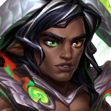
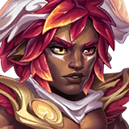
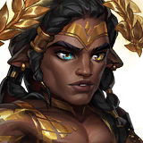
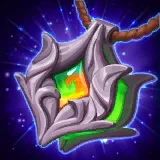
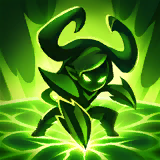
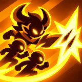
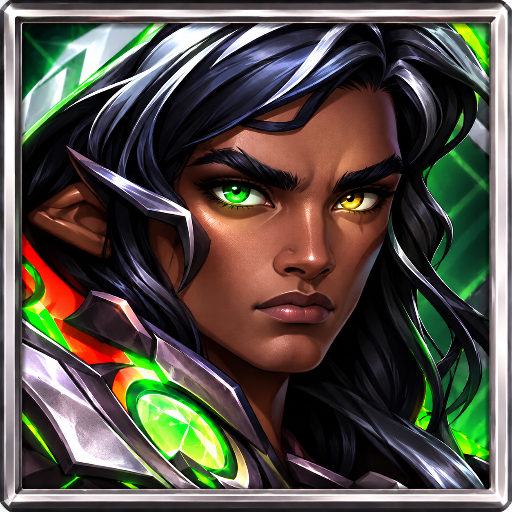
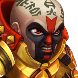

SKILL 3
Deepwood Might
Increases Critical Hit Chance for allies positioned behind Wodryn.
This can improve offensive consistency while also interacting with the team's defensive mechanics.
The whole build on one screen. Every recommendation is explained in full further down.




Master the Nature Tank's defensive support, Critical Hit mechanics, Energy generation, optimal build priorities and powerful hero synergies.
Wodryn is more than a Tank who stands at the front and absorbs damage. He combines cleansing, Critical Hit Chance support, Oak Bark protection, additional Energy generation and damage reduction.
His abilities create an unusual relationship between offense and defense: Critical Hit Chance can help allies deal more damage while also influencing their probability of reducing incoming damage.
This guide covers Wodryn's core mechanics, recommended build priorities and five promising hero partnerships.
Wodryn's identity revolves around frontline protection, Critical Hit Chance support and additional Energy generation.
Increases Critical Hit Chance for allies positioned behind Wodryn.
This can improve offensive consistency while also interacting with the team's defensive mechanics.
Uses each hero's Critical Hit Chance to determine the probability of reducing incoming damage.
Critical Hit Chance therefore has both offensive and defensive value in Wodryn's teams.

Provides cleansing against Debuffs and Control Effects.
This is a cleansing mechanic, not permanent immunity to effects that can be reapplied.
Wodryn gains additional Energy when taking damage while Oak Bark is active.
This creates potential interactions with heroes who benefit from allied Energy generation.
Wodryn has received his Relics, and we upgraded him to level ten to unlock Wildwood Fury and Bark Renewal. Below are all four effects, then nine battles with three attacking teams. The level twenty and level thirty effects are discussed from their descriptions; they are not unlocked or tested in these battles.

Lasts for nine seconds and is described as activating every fifteen seconds. While it is active, Critical Hits from Wodryn and his allies deal additional physical damage, based on the Magic Defense of the hero landing the Critical Hit.
The benefit is not limited to Wodryn: a teammate who lands a Critical Hit during the effect also adds damage, and Deepwood Might already raises the Critical Hit Chance of allies behind him. Different heroes add different amounts, and the Critical Hit still has to happen while the effect is active.
While Oak Bark is active, Wodryn deals physical damage to enemies in front of him after every six hits he takes. If Oak Bark expires, the hit counter resets.
This gives the front line another reason to keep Wodryn active: he needs Oak Bark and needs to take hits. It adds damage during the fight, but the final damage panel won't show how much came from this Relic alone.
Whenever damage received by Wodryn himself is reduced through this Skill, he gains two layers of Oak Bark.
Those extra layers could strengthen the connection between his protection, his Energy gain and Deepwood Might. The reduced damage must be received by Wodryn himself.
While Wodryn is alive, enemy Pure Damage dealt to his team is converted into Magic Damage.
That is a change of damage type, not immunity: the team can still take damage, and keeping Wodryn alive remains essential. A potentially important upgrade against teams that rely on Pure Damage, but it needs its own practical testing.
Wodryn, Byrna, Crow and Guus form the shared core. Guus is particularly interesting because Golden Feather can increase allied Critical Hit Chance — supporting heroes who land Critical Hits and the protection from Wodryn's Unbowed Oak. Mushy & Shroom, Luther and Tristan each change the lineup around that core.



Crown of Wrath adds pressure while the rest of the team keeps attacking. Wodryn and Guus both support Critical Hit Chance, while Byrna and Guus bring healing. Critical Hit Chance helps Crow land Critical Hits and also feeds Unbowed Oak's damage reduction for eligible allies.

Luther replaces Mushy & Shroom. We see Crown of Wrath early and Under the Wing later in the fight. Guus raises allied Critical Hit Chance, while the level ten Relic adds another source of physical damage when Wodryn takes enough hits with Oak Bark active.

Tristan adds his own physical damage with Purifier's Wrath, and Wodryn leads the damage on the final panel in a fast finish. Tristan can gain Energy when an eligible ally in front of him gains Energy, and Wodryn gains extra Energy when hit with Oak Bark active — an interaction worth further testing.
Wodryn, Byrna, Crow and Guus gave a consistent core across three different teams. These are first impressions, not a claim that one lineup is best against every defense.
Test the combinations against the teams you face, and pay attention to how often Wodryn stays active at the front.
Our recommended priority is to develop Wodryn as a reliable frontline Tank before investing in additional offensive potential.
Strength is Wodryn's main attribute. It improves Health and Physical Attack. Because several abilities scale with Physical Attack, this is a particularly valuable investment.
Wodryn needs to survive long enough to cleanse allies, activate defensive mechanics, generate Oak Bark and provide Critical Hit Chance support.
His Ultimate deals Physical Damage, so Armor Penetration can help overcome enemy Armor. However, frontline durability takes priority over turning him into a damage dealer.
Our recommended Glyph order focuses on durability and the attributes that directly support Wodryn's abilities.
Supports his main attribute, survivability and overall development.
Essential for keeping Wodryn active as a frontline Tank.
Contributes to Wodryn's damage, healing and the Critical Hit Chance bonuses provided by Deepwood Might.
Supports offensive potential and interacts with the defensive probability of Unbowed Oak.
Adds protection against magical threats, although our current priority favors attributes more directly connected to his core kit.
Our first priority. Strength provides a solid development foundation and improves Physical Attack, supporting several Wodryn abilities.
Increases Critical Hit Chance and Magic Defense. Critical Hit Chance interacts with Unbowed Oak's damage reduction probability, while Magic Defense improves survivability.
Provides Magic Defense to the entire team for nine seconds when activated. Valuable against magical threats, although our general build recommendation places it third.
Our recommendation is to maximize Wodryn's Sparks of Power as your resources allow.
He benefits from overall stat development, especially because he needs sufficient durability to remain active and continue providing protection, cleansing and support.
Wodryn's Talisman of Two Forms provides Strength as its main attribute and Toughness as its secondary stat.
Strength supports his overall development, while Toughness improves resistance to incoming damage when his Health falls below 50%.
This is a useful defensive combination for a Tank exposed to constant frontline pressure.
Wodryn opens several team-building possibilities. These five partnerships highlight different ways to benefit from his Critical Hit Chance, defensive support and Energy mechanics.
Guus is a natural partner for Wodryn's Critical Hit mechanics. Through Golden Feathers, Guus can increase Critical Hit Chance, strengthen Critical Hit Damage and help allies recover Health.
Together, they can create stronger offensive pressure while improving the conditions for Unbowed Oak's damage reduction.
Positioning matters: Guus provides Golden Feathers to allies in front of him, while Wodryn supports allies positioned behind him.
Leonel's Mark of Fate allows his Critical Hits to apply marks that drain enemy Energy. These marks can stack.
By increasing Leonel's Critical Hit Chance, Wodryn can create more opportunities to apply these marks and disrupt enemy Energy generation.
Leonel also contributes through Royal Roar, increasing Critical Hit Chance for himself and the ally with the highest Physical Attack.
Adding Guus introduces additional Critical Damage support.
Crow brings Silence against Intelligence-based enemies through Silent Judgment. Meanwhile, Wodryn provides teamwide Magic Defense through Rootbreaker and cleansing through Bark Renewal.
This creates a combination of offensive disruption and defensive support against certain magical compositions.
Limitation: This combination is not guaranteed to counter every magic team. Continuously reapplied negative effects can return immediately after Wodryn cleanses them.
Tristan's Blessed Vanguard allows him to benefit from Energy gained by the ally directly in front of him, subject to the skill's conditions.
Wodryn gains additional Energy when taking damage while Oak Bark is active. Positioning Wodryn directly in front of Tristan therefore creates a potential Energy interaction.
Tristan's Righteous Zeal also increases Physical Attack for himself and allies positioned in front of him. This can strengthen Wodryn's damage, healing and Critical Hit Chance support.

Yasmine specializes in Critical Hits and aggressive attacks against vulnerable enemies. Her Dance of Death targets the enemy with the lowest Armor, while Assassin's Instinct increases her Critical Hit Chance and Dodge.
Wodryn's Deepwood Might can improve her offensive consistency. Meanwhile, Unbowed Oak can benefit from Yasmine's own Critical Hit Chance.
Adding Guus creates another potential layer of Critical Hit Chance, Critical Damage and healing support.
Wodryn has promising defensive mechanics, but his effectiveness depends on the specific opponents and how their abilities interact with his own.
Bark Renewal can remove negative effects, but enemies that continuously reapply them may affect the team again.
His cleansing abilities should be evaluated against different forms of Control through actual battle testing.
Several of Wodryn's most interesting synergies depend on whether allies are positioned in front of or behind him.
His long-term competitive value will depend on how consistently his mechanics perform against real opponents.
Wodryn is a Nature Tank with an unusual combination of protection, offensive support and Energy generation.
Our current recommendation is to prioritize Strength and Health, followed by the Physical Attack and Critical Hit Chance attributes that support his core mechanics.
Guus strengthens Critical Hit support and survivability. Leonel adds Energy disruption. Crow contributes Silence. Tristan creates Energy and Physical Attack interactions. Yasmine offers aggressive assassination potential.
However, Wodryn is still a developing hero. Future Relics and additional battle testing may change how we evaluate his builds and competitive value.
Watch the complete Gods of Alliance video covering Wodryn's build priorities and five hero synergies.